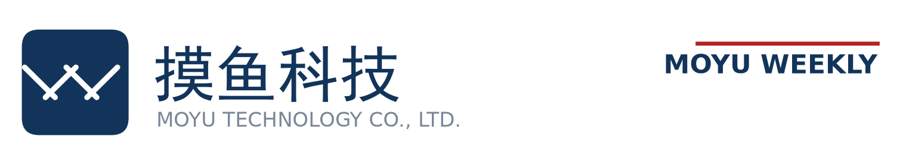
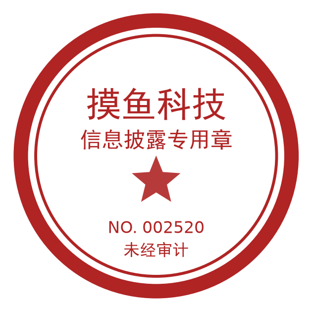
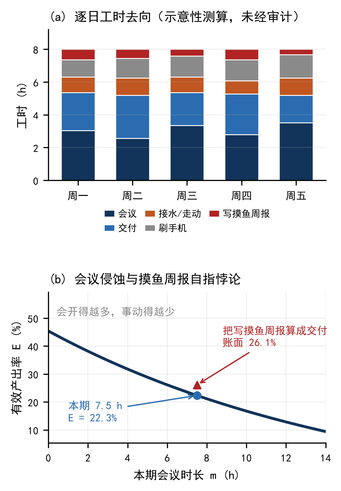
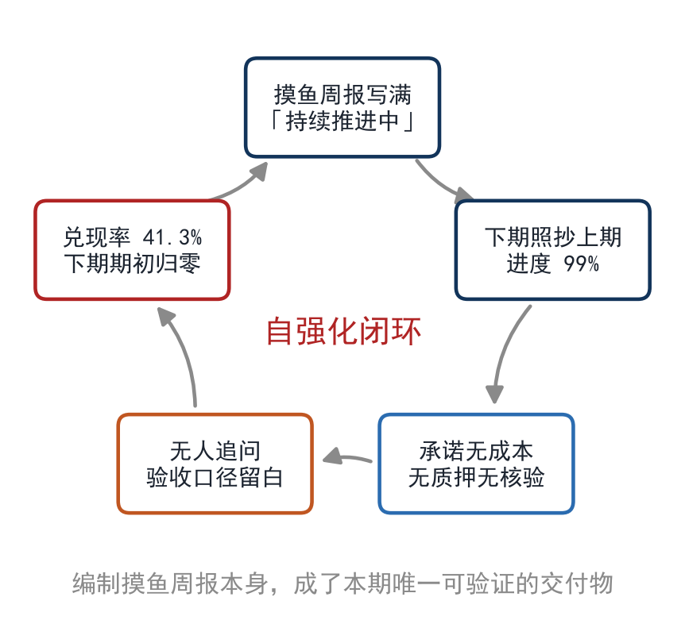
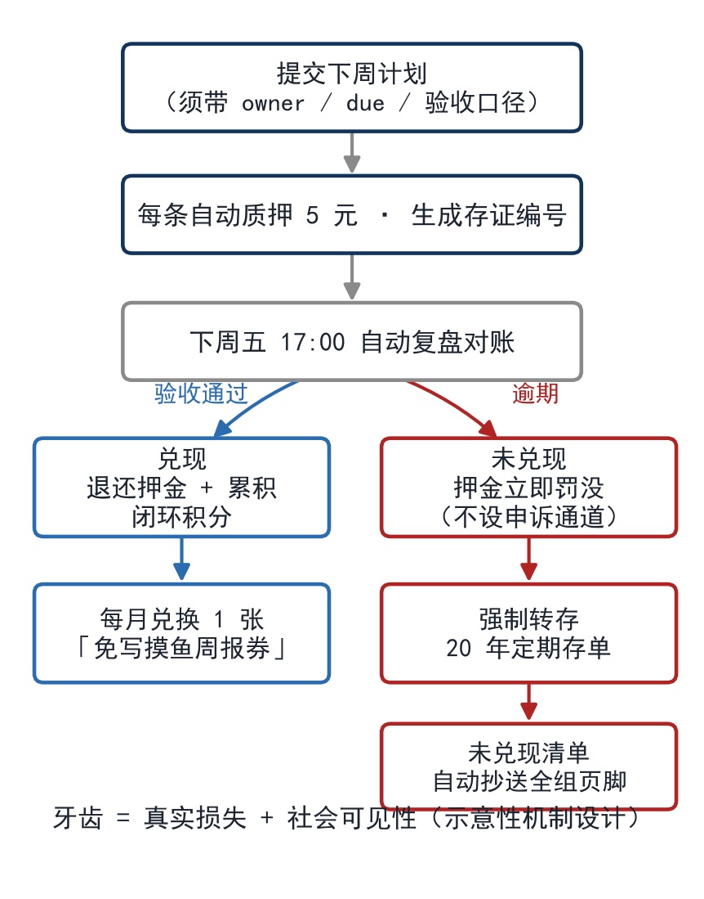

| 词语 | 含义 |
|---|---|
| 公司 / 本公司 | 指摸鱼科技股份有限公司及其所辖 B-14 工位，不含任何真实法人实体。 |
| 报告期 | 2026-11-02 ~ 2026-11-08，共 5 个工作日，名义工时 40 h。 |
| 摸鱼周报自指悖论 | 把「撰写本报告」计为交付物时，账面产出被系统性抬高的现象。 |
| 决策真空 | 会议数量与需要本填报人做出的决策数量在统计上完全解耦的状态。 |
| 摸鱼熵 | 注意力在会议 / 交付 / 接水 / 刷手机 / 写摸鱼周报五类活动上的分散度。 |
| 末端通胀 | 进度由 90% 推进至 99% 所占用的时间比例，模型测算为 50.0%。 |
| WDP | 摸鱼周报质押协议（Weekly Deposit Protocol），本报告提出的带牙齿的内控机制。 |
| 示意性测算 | 由测算模型生成、未经审计、不代表真实经营数据的数值，全文均已标注。 |
报告期内，本公司（指摸鱼科技股份有限公司所辖 B-14 工位，下同）主营业务未发生重大变化，仍以会议出席、进度条观测、饮水机水位目视巡检及摸鱼周报编制为主。截至报告期末，所辖工位 1 个、在岗人员 1 名、饮水机 1 台，均未发生增减变动。本报告全部数值由第七节测算模型生成，属示意性测算，未经审计、非真实经营数据，所有小数点的存在仅为维护披露文件的庄重感。
报告期内共清点交付物 4 项，逐条附交付物形态与验收口径。为便于阅读，所有条目均已按经营成果格式规范化，对象本身是否构成经营成果不在本次口径校准范围内。
值得说明的是，第 4 项与前 3 项在统计口径上存在轻微的自指关系：前三项之所以被认定为交付物，依据正是它们出现在第 4 项里。说到底，会开完了，事没动，但纪要确实有了。
本报告期共纳入 6 项主要经营指标，全部数值由第三节口径 (1)--(3) 所述测算模型生成，未经审计，不构成业绩承诺。表 1 给出本期值、环比、统计口径与责任人；图 1 给出逐日工时去向与有效产出率变动曲线。
会议密度指数录得 7.5 h，环比 +11.9%，其中需要本填报人做出决定的会议为 0 场。有效产出率按口径 (1) 降至 22.3%；若依惯例把「撰写本报告」计为一项交付物，账面产出率将上升至 26.1%。该差额即为摸鱼周报自指悖论的可测量部分：报告越厚，产出越虚。
| 指标 | 本期值 | 环比 | 统计口径 / 责任人 |
|---|---|---|---|
| 会议密度指数 | 7.5 h | +11.9% | 日历口径 / 本人 |
| 有效产出率 E | 22.3% | -4.1 pp | 口径 (1) / 本人 |
| 摸鱼熵 H | 1.444 | +89.7% 上限 | 口径 (2) / 本人 |
| 本周接水/走动 | 4.8 h | 持平 | 工位凝视法 / 本人 |
| 账面产出（含摸鱼周报） | 26.1% | 虚高 | 自指项 / 本人 |
| 承诺兑现率 | 41.3% | 无质押 | 口径 (3) / 本人 |

管理层（即本人）就报告期经营情况讨论如下。本节深挖上述现象的症结，给出可计算口径与内控改进方向。所有口径仅用于产生示意性数值，不代表任何真实组织的行为规律，也不构成管理建议。
设报告期会议总时长为 m，注意力在 k 类活动上的分布为 pi，定义有效产出率如口径 (1)。第一项为会议对产出的指数侵蚀，第二项为注意力分散带来的折减。
其中 E0 = 0.62 为名义产出率，λ = 0.062 为会议侵蚀系数，κ = 0.115 为摸鱼熵折减系数，H 为口径 (2) 定义的摸鱼熵。代入本期 m = 7.5 h 得 E = 22.3%。需要本填报人做出决定的会议为 0 场，故本报告期观测到的是决策真空：会议数量与决策数量在统计上完全解耦。听君一席话，胜读一席话。
口径 2（摸鱼熵）：报告期注意力分布的混乱度 H = -Σpi ln pi。当注意力均匀分散时 H → ln k，模型判定该周期处于忙且空转稳态。本期 H = 1.444，为上限 ln 5 = 1.609 的 89.7%。
口径 (2) 给出摸鱼周报自指悖论：编制报告所耗工时 Wreport 被计为交付物时，账面产出率 E′ 上升至 26.1%，而真实 E 仍为 22.3%。报告越厚，产出越虚；唯一被稳定交付的，是关于交付的报告。图 2 给出这一自强化闭环：写满「持续推进中」→ 下周照抄 → 承诺无成本 → 无人核验 → 再写满「持续推进中」。

公司内部制度文件[1][2]普遍把摸鱼周报视为信息同步工具，隐含假设是「条目被写下」等价于「事项被推进」。本期对账显示，上期报告[3]中 5 条「持续推进中」有 4 条在本期原样照登，1 条仅将措辞由「推进中」升级为「持续推进中」。据此管理层认为：摸鱼周报的真正功能不是同步信息，而是为未发生的事提供一个体面的存放位置。
另有同业实践[4]建议「设个提醒」以改善兑现率。模型对照显示该方案仅把兑现率由 41.3% 抬到 48.8%，原因是提醒本身可被划掉，不具备真实代价。对齐了颗粒度，没对齐进度。
阻塞项按 P0 / P1 / P2 分级，每条带责任人、截止日期与升级路径（表 2）。本期最高等级 P0 并非技术风险，而是已读不回：对方具备回复能力、具备回复渠道、且已被系统确认读取，唯独不具备回复行为。该状态在口径 (3) 的测算模型里对应净效用 -0.35，兑现率仅 41.3%。
升级路径统一为「下周三 18:00 未解除则抄送全组页脚」。需要指出，抄送全组页脚并不会使对方回复，但会使本报告显得已经采取了措施。这一区别在季度复盘时通常不被区分。
| 等级 / 责任人 | 风险描述 | 截止 / 升级路径 |
|---|---|---|
| P0 / 本人 | 对方已读不回，需求第 3 次漂移 | 下周三 18:00 / 抄送全组 |
| P1 / 协同组 | 进度条停留 99% 已逾 3 日 | 下周五 12:00 / 拉通对齐 |
| P2 / 本人 | 收藏 14 篇必读，实际阅读 0 篇 | 下周五 / 纳入质押 |
| 无 | 其余风险本报告期未识别 | 持续监控（不写「推进中」） |
诊断之后必须给出制度。管理层识别的真实症结是：承诺零成本、兑现零核验。据此郑重提出摸鱼周报质押协议（Weekly Deposit Protocol, WDP），其核心不是「加强计划管理」这类抽象原则，而是一个真会咬人的具体机制：提交一条下周计划，即同时质押 5 元。
协议规程如下：(1) 提交承诺项时自动生成存证编号并划转押金；(2) 下周五 17:00 由系统按验收口径自动对账，验收通过则退还押金并累积闭环积分，每月可兑换 1 张「免写摸鱼周报券」；(3) 逾期未兑现者押金立即罚没，不设申诉通道，并强制转存一份 20 年定期存单——「你没做完的事，替你把钱锁进了时间的保险柜，20 年后连本带息还给那个更自律的你」；(4) 未兑现清单自动抄送全组摸鱼周报页脚。其内核是押金式承诺装置、损失厌恶与社会可见性三重真实杠杆[5]，外壳荒诞但每一步都从症结顺理成章推出。图 3 给出流程，表 3 给出示意性前后对比。

| 做法 | 承诺兑现率 | 未兑现代价 |
|---|---|---|
| 传统摸鱼周报 | 41.3% | 无（下周照抄） |
| 设个提醒 | 48.8% | 仍无（提醒可划掉） |
| 质押协议 WDP | 85.2% | 罚没 + 20 年定期 + 全组可见 |
口径 3（承诺兑现率）：设兑现净效用为 u，则 R(u) = 1/(1+e-u/θ)，θ = 1.0 为决策噪声温度。传统摸鱼周报 u = -0.35，设提醒 u = -0.05，WDP 下押金与社会可见性把 u 抬高至 1.75，兑现率相应由 41.3% 升至 85.2%。
本协议的局限有三：其一，模型假设人对 5 元罚金保持理性敏感，而本填报人对 5 元的敏感度显然低于对「全组可见」的敏感度；其二，20 年定期存单的到期日超出本报告任何在途事项的预计完成时间；其三，协议由填报人自行设计、自行审批、自行抄送，审批链的三个节点经查为同一人。上述不足不影响本期结论，因为本期结论只有一句：摸鱼周报按时交了。
下周共提交 3 条承诺项，逐条绑定验收口径，并自本期起接入第五节的摸鱼周报质押协议 WDP。承诺项一经提交即生成存证编号，不接受「下周再说」作为延期理由——「下周再说」已在第三节被登记为在途事项。
三条承诺合计质押 15 元。模型测算在协议约束下整体兑现率由 41.3% 升至 85.2%（示意性预期，未经审计）。三条承诺的措辞已由 v0.8 的「持续推进」统一修订为可验收动词，本次修订是本报告期实际发生的最大范围变更。
本期主要结论如下：第一，会议密度上行而决策数量恒为零，有效产出率降至 22.3%，摸鱼熵达上限的 89.7%；第二，把编制摸鱼周报计为交付会系统性抬高账面产出，该自指悖论可计量、可核对、且每周准时发生；第三，承诺零成本是在途事项长期停留 99% 的根本原因，为其装上押金、罚没与全组可见三口牙齿后，示意性兑现率升至 85.2%。
综合而言，本期未发生任何需要写进工作报告的事项，但报告本身按时完成，并经 7 次修订达到 v0.9。这既是对本期的忠实描述，也是本报告存在的全部理由。身体在工位，灵魂在摸鱼周报里。
审批签字栏（自设立起永久留白）：按惯例，本栏自本文件设立以来保持空白，以可视化方式收束全文论点：没有任何一份摸鱼周报真正被审批过。表 4 给出四个节点的空白模板，供后续报告期继续留白。
| 审批节点 | 签字 | 日期 |
|---|---|---|
| 编制人 / 自提 | ____________ | __________ |
| 自审 / 复核 | ____________ | __________ |
| 自动抄送 / 归档 | ____________ | __________ |
| 上级意见 | （本栏保持空白） | — |